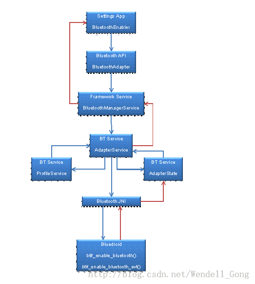

夜影轩的专栏
和奋斗的人一起奋斗，让蜗居的人蜗居去吧.....
 目录视图
目录视图 摘要视图
摘要视图 订阅
订阅 分类：
分类： android（22）
android（22） 
版权声明：本文为博主原创文章，未经博主允许不得转载。
首先介绍下几个重要的类：
在Android 4.3中引入了一个新的类BluetoothManager，它是一个high level manager，被用于”to obtain an instance of an BluetoothAdapter and conduct overall Bluetooth Management“。
LocalBluetoothManager.java 提供了蓝牙API上的简单调用接口，本机蓝牙设备管理，开启关闭，搜索等等）。
BluetoothEnabler.java 界面的点击和状态文字的显示。
流程为：Settings的BluetoothEnabler类（对应于UI上看到的Bluetooth开关），得到代表local device的BluetoothAdapter。
看源码：
~T%7D8L5O8@SWQ54%7DJ%1@@%7BQ.jpg)

可以看出BluetoothEnabler在构造里会先调用 LocalBluetoothManager.getInstance(context)，在getInstance里会调用init()函数，BluetoothAdapter.getDefaultAdapter()获得蓝牙设备的句柄，如果当前没有蓝牙设备则返回null。 源码中manager可以对本地蓝牙进行管理，并且manager湖区得到mLocalAdapter（本地蓝牙适配器）。同时设置蓝牙适配器的事件过滤mIntentFilter。
即：BluetoothEnabler->LocalBluetoothManager->BluetoothAdapter;
这里的BluetoothAdapter：framework封装的类，提供本地蓝牙设备的配置，包括开启蓝牙，搜索周围蓝牙设备，设置本地蓝牙可见性。
enable蓝牙：
1、开启蓝牙的service
从界面上看蓝牙开关就是设置settings里那个switch开关，widget开关当然也可以，起点不同而已，后续的流程是一样的。先来看systemServer.java的代码，蓝牙服务开启的地方，最后一个else分支是我们关心的，前两个是模拟器的一个测试模式的。
- if (SystemProperties.get("ro.kernel.qemu").equals("1")) {
- Slog.i(TAG, "No Bluetooh Service (emulator)");
- } else if (factoryTest == SystemServer.FACTORY_TEST_LOW_LEVEL) {
- Slog.i(TAG, "No Bluetooth Service (factory test)");
- } else {
- Slog.i(TAG, "Bluetooth Manager Service");
- bluetooth = new BluetoothManagerService(context);
- ServiceManager.addService(BluetoothAdapter.BLUETOOTH_MANAGER_SERVICE, bluetooth);
- }
暂且看下bluetoothManagerService的构造方法，代码有点多，我们只看两个地方， loadStoredNameAndAddress()是读取蓝牙打开默认名称的地方，isBluetoothPersistedStateOn()是判断是否已打开蓝牙的，如果已打开，后续操作要执行开启蓝牙的动作，前面那几行注册广播其中就有这个作用。
- BluetoothManagerService(Context context) {
- ...一些变量声明初始化...
- IntentFilter filter = new IntentFilter(Intent.ACTION_BOOT_COMPLETED);
- filter.addAction(BluetoothAdapter.ACTION_LOCAL_NAME_CHANGED);
- filter.addAction(Intent.ACTION_USER_SWITCHED);
- registerForAirplaneMode(filter);
- mContext.registerReceiver(mReceiver, filter);
- loadStoredNameAndAddress();
- if (isBluetoothPersistedStateOn()) {
- mEnableExternal = true;
- }
- }
回到界面开关那个看得着的地方，界面上开关就是BluetoothEnabler.java这个类了。
2、Enable蓝牙
当我们开启蓝牙的按钮的时候会触发一个事件：
看下代码
- public void onCheckedChanged(CompoundButton buttonView, boolean isChecked) {
- // Show toast message if Bluetooth is not allowed in airplane mode
- if (isChecked &&
- !WirelessSettings.isRadioAllowed(mContext, Settings.Global.RADIO_BLUETOOTH)) {
- Toast.makeText(mContext, R.string.wifi_in_airplane_mode, Toast.LENGTH_SHORT).show();
- // Reset switch to off
- buttonView.setChecked(false);
- }
- if (mLocalAdapter != null) {
- mLocalAdapter.setBluetoothEnabled(isChecked);
- }
- mSwitch.setEnabled(false);
- }
这里在判断是飞行模式不知道为什么没有return，如果是飞行模式会有提示toast弹出，既然这样源码为什么还要执行下面打开流程呢，也许是个bug？不细究这个了，继续看setBluetoothEnabled()方法做什么了，很明显mLocalAdapter(LocalBluetoothAdapter )只是个过渡，里面的 mAdapter(BluetoothAdapter)才是真正的主角，即开始开启enable，代码如下：
- public void setBluetoothEnabled(boolean enabled) {
- boolean success = enabled ? mAdapter.enable() : mAdapter.disable();
- if (success) {
- setBluetoothStateInt(enabled
- ? BluetoothAdapter.STATE_TURNING_ON
- : BluetoothAdapter.STATE_TURNING_OFF);
- } else {
- .........
- }
- }
- public static synchronized BluetoothAdapter getDefaultAdapter() {
- if (sAdapter == null) {
- IBinder b = ServiceManager.getService(BLUETOOTH_MANAGER_SERVICE);
- if (b != null) {
- IBluetoothManager managerService = IBluetoothManager.Stub.asInterface(b);
- sAdapter = new BluetoothAdapter(managerService);
- } else {
- Log.e(TAG, "Bluetooth binder is null");
- }
- }
- return sAdapter;
接着来说，此时我们更关心mAdapter.enable()的后续操作。
其中在这期间还做了些事情，AdapterService维护着一个状态机。
1、AdapterService维护着一个状态机AdapterState，所有工作都是通过驱动状态机来完成的。AdapterState收到AdapterService发过来的USER_TURN_ON消息，就会调用AdapterService::processStart()来启动Profie Services的初始化和Bluetooth hardware enable process。此时Bluetooth Adapter的状态是BluetoothAdapter.STATE_TURNING_ON。
2、每一个profile都有一个service。每个profile service启动完成后，都会通知AdapterService。当AdapterService::processProfileServiceStateChanged()确认所有的profile services都启动完成了，就会给状态机AdapterState发AdapterState.STARTED消息。
3、状态机AdapterState::PendingCommandState::processMessage()收到AdapterState.STARTED消息后就立刻调用AdapterService::enableNative()。
4、AdapterService::enableNative()就是用来enable Bluetooth的Bluetooth JNI接口。enableNative()会调用Bluetooth HAL的enable()。
5、Bluedroid用btif_enable_bluetooth()来实现了Bluetooth HAL的enable()。
6、当Bluedroid真正完成了enable Bluetooth hardware，就通过btif_enable_bluetooth_evt()中的HAL_CBACK调用Bluetooth JNI的adapter_state_change_callback()，这样就把BT_STATE_ON消息传递给了状态机AdapterState。
7、AdapterState会把Bluetooth Adapter的状态转换到BluetoothAdapter.STATE_ON，并通过AdapterState::notifyAdapterStateChanged()通知AdapterService。
8、AdapterService::updateAdapterState()会通过callback函数通知BluetoothManagerService，Adapter状态改变了。
9、BluetoothManagerService确认状态发生了改变就会发出一个BluetoothAdapter.ACTION_STATE_CHANGE的intent。
10、Settings的BluetoothEnabler收到这个intent之后，就会去更新UI上Bluetooth开关的状态。
流程图如下：

继续分析的话：
那就是去AdapterService里看看，里面一共有三个enable()，跳转关系不复杂，我们直接看最后一个关键的。
- public synchronized boolean enable(boolean quietMode) {
- enforceCallingOrSelfPermission(BLUETOOTH_ADMIN_PERM,
- "Need BLUETOOTH ADMIN permission");
- if (DBG)debugLog("Enable called with quiet mode status = " + mQuietmode);
- mQuietmode = quietMode;
- Message m =
- mAdapterStateMachine.obtainMessage(AdapterState.USER_TURN_ON);
- mAdapterStateMachine.sendMessage(m);
- return true;
- }
处理在同文件下面的代码里
- case STARTED: {
- if (DBG) Log.d(TAG,"CURRENT_STATE=PENDING, MESSAGE = STARTED, isTurningOn=" + isTurningOn + ", isTurningOff=" + isTurningOff);
- //Remove start timeout
- removeMessages(START_TIMEOUT);
- //Enable
- boolean ret = mAdapterService.enableNative();
- if (!ret) {
- Log.e(TAG, "Error while turning Bluetooth On");
- notifyAdapterStateChange(BluetoothAdapter.STATE_OFF);
- transitionTo(mOffState);
- } else {
- sendMessageDelayed(ENABLE_TIMEOUT, ENABLE_TIMEOUT_DELAY);
- }
看到那个enableNative()函数调用了吧，又要用到JNI了，稍微回头看下前面的代码，我们先从应用界面开关BluetoothEnabler走到framework的BluetoothAdapter，又回到package的adapterService，现在又要去JNI的C++代码了，往常一般是packages -->framework-->下面一层，这次顺序有些颠倒了，不过这不能影响我们跟踪代码，最后
还是要到下面去的。一起往下看吧。
根据android JNI的函数命名惯例很容易找到enableNative对应的C++函数在packages/apps/Bluetooth/jni/com_android_bluetooth_btservice_AdapterService.cpp里面
- static jboolean enableNative(JNIEnv* env, jobject obj) {
- ALOGV("%s:",__FUNCTION__);
- jboolean result = JNI_FALSE;
- if (!sBluetoothInterface) return result;
- int ret = sBluetoothInterface->enable();
- result = (ret == BT_STATUS_SUCCESS) ? JNI_TRUE : JNI_FALSE;
- return result;
- }
代码瞬间简洁了不少，看来更多的故事还在下面，sBluetoothInterface这是什么，直接关系到下一步去哪的问题，看下变量声明，原来是
Const bt_interface_t *sBluetoothInterface = NULL; 再去找在哪初始化，搜索external目录可以找到/external/bluetooth/bluedroid/btif/src/bluetooth.c
- static const bt_interface_t bluetoothInterface = {
- sizeof(bt_interface_t),
- init,
- enable,
- disable,
- .............
- start_discovery,
- cancel_discovery,
- create_bond,
- remove_bond,
- cancel_bond,
- ...............
- };
- static int enable( void )
- {
- ALOGI("enable");
- /* sanity check */
- if (interface_ready() == FALSE)
- return BT_STATUS_NOT_READY;
- return btif_enable_bluetooth();
- }
- bt_status_t btif_enable_bluetooth(void)
- {
- BTIF_TRACE_DEBUG0("BTIF ENABLE BLUETOOTH");
- if (btif_core_state != BTIF_CORE_STATE_DISABLED)
- {
- ALOGD("not disabled\n");
- return BT_STATUS_DONE;
- }
- btif_core_state = BTIF_CORE_STATE_ENABLING;
- /* Create the GKI tasks and run them */
- bte_main_enable(btif_local_bd_addr.address);
- return BT_STATUS_SUCCESS;
- }
- void bte_main_enable(uint8_t *local_addr)
- {
- APPL_TRACE_DEBUG1("%s", __FUNCTION__);
- ........................
- #if (defined (BT_CLEAN_TURN_ON_DISABLED) && BT_CLEAN_TURN_ON_DISABLED == TRUE)
- APPL_TRACE_DEBUG1("%s Not Turninig Off the BT before Turninig ON", __FUNCTION__);
- #else
- /* toggle chip power to ensure we will reset chip in case
- a previous stack shutdown wasn't completed gracefully */
- bt_hc_if->set_power(BT_HC_CHIP_PWR_OFF);
- #endif
- bt_hc_if->set_power(BT_HC_CHIP_PWR_ON);
- bt_hc_if->preload(NULL);
- }
- .............................
- }
路径在这里/external/bluetooth/bluedroid/hci/src/bt_hci_bdroid.c，看看set_power里面有什么，快到头了
- static void set_power(bt_hc_chip_power_state_t state)
- {
- int pwr_state;
- BTHCDBG("set_power %d", state);
- /* Calling vendor-specific part */
- pwr_state = (state == BT_HC_CHIP_PWR_ON) ? BT_VND_PWR_ON : BT_VND_PWR_OFF;
- if (bt_vnd_if)
- bt_vnd_if->op(BT_VND_OP_POWER_CTRL, &pwr_state);
- else
- ALOGE("vendor lib is missing!");
- }
- /* Entry point of DLib --
- * Vendor library needs to implement the body of bt_vendor_interface_t
- * structure and uses the below name as the variable name. HCI library
- * will use this symbol name to get address of the object through the
- * dlsym call.
- */
- extern const bt_vendor_interface_t BLUETOOTH_VENDOR_LIB_INTERFACE;
- bt_vendor_interface_t *bt_vnd_if=NULL;
google定义好了接口，具体实现要看vendor厂商来做了，这后面怎么实现就看各家芯片商怎么写了，肯定各有不同，而且这一部分代码一般是不会公开，当然授权购买后除外了。所以在4.2的源码中我们只跟到这里了，那后面会做什么呢，加载驱动和上电这两项肯定要有了，打开蓝牙没这两步怎么行，类似下面的字符串
- static const char* BT_DRIVER_MODULE_PATH = "/system/lib/modules/mbt8xxx.ko";
- static const char* BT_DRIVER_MODULE_NAME = "bt8xxx";
- static const char* BT_DRIVER_MODULE_INIT_ARG = " init_cfg=";
- static const char* BT_DRIVER_MODULE_INIT_CFG_PATH = "bt_init_cfg.conf";
在有类似下面的动作，insmod加载驱动，rfkill控制上下电，具体厂商具体做法也不同。
- ret = insmod(BT_DRIVER_MODULE_PATH, arg_buf);
- ret = system("/system/bin/rfkill block all");
- 顶
- 0
- 踩
- 0
我的同类文章
- •android system.img,ramdisk.img,boot.img 分析2014-07-22阅读312•Bluetooth in Android 4.2 and 4.3:Scan remote devices2014-05-26阅读926•蓝牙core系统体系结构2014-05-07阅读959•用FTS分析蓝牙数据包2014-05-05阅读722•在HCI层ACL Connection的建立2014-05-05阅读472
- •android下的callback机制2014-06-11阅读5716•蓝牙技术2014-05-07阅读1146•Bluetooth在andriod下的开发基本操作2014-05-05阅读983•在HCI层看从inquiry的整个过程2014-05-05阅读608
- 猜你在找
暂无评论
核心技术类目
- 个人资料

yuanzhangmei1- 访问：273174次积分：3797等级：
 排名：第4996名
排名：第4996名
- 原创：71篇转载：239篇译文：1篇评论：27条
- 访问：273174次积分：3797等级：
- 文章分类
- 阅读排行
- Qt中数据库基本操作--QSqlQuery(9416)POSIX 线程详解第 2部分--互斥量(9316)QVariant实质(6706)通过Qt打开网页--QUrl(6402)Qt 样式表 setStyleSheet(6115)android下的callback机制(5724)HTML 和 PHP 、MySQL 的交互(5490)用 Qt 中的 QDomDocument类 处理 XML 文件（下）(5252)关于Qt的字符编码问题(4625)QPalette设置各种背景色(4595)
- 评论排行
- 推荐文章
- 最新评论
- android下的callback机制Android 4.2蓝牙介绍28xx 系列dsp c/c++编程入门QPalette设置各种背景色android下的callback机制文件描述符 和 流的关系struct file struct inodeBluetooth在andriod下的开发基本操作字符设备驱动内核框架小结（一）字符设备驱动内核框架小结（一）
- wangyunzan123: 写的好
- qq_17056021: 学习蓝牙发展对蓝牙的学习有一定帮助作用。
- TJU_LUNA: 感谢分享
- qq_30083367: ui->pushButton_open->setAutoFillBackground(true);p...
- operaFG: 学习了
- iamthefirstone: 谢谢
- 遨游Hero: read()->sys_read()->vfs_read()->{file->f_op->read写...
- Normantj: 可否将你正在用的这个开发板信息(包括开发工具和开发环境）发送给我(或者卖一套给我)，我得自己去买一套...
- 糖馅饼: 写的很好！赞一个
- -沉默羔羊-: 很详细,文章真不错